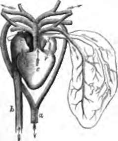
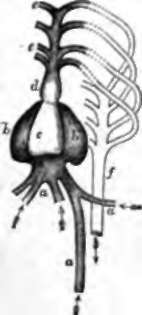
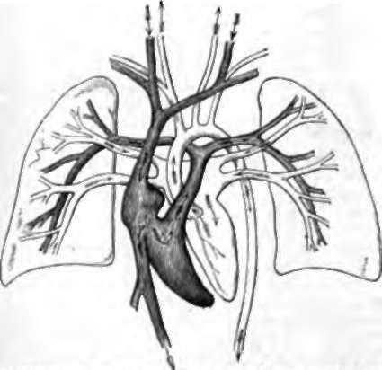

Chapter IX. Circulation
Description
This section is from the book "Animal Physiology: The Structure And Functions Of The Human Body", by John Cleland. Also available from Amazon: Animal Physiology, the Structure and Functions of the Human Body.
Chapter IX. Circulation
84. We have already had occasion to mention that the blood circulates through the body in a system of close vessels. It is propelled by the heart through the arteries to a fine capillary network, whence it returns to the heart again by the veins.
The blood which has circulated in the tissues requires to be aerated to reconvert it from the dark to the scarlet condition, before it can be allowed to go to the tissues again; and this is managed in different ways in different animals. In fishes, the blood returning from the system is propelled by the heart into the gills, and from them right on into the system again; passing through two sets of capillaries, one in the gills and the other in the system, before it returns to the heart. In amphibians, for example in the frog, and in reptiles, with the exception of the crocodiles, the blood is propelled from the heart partly into the respiratory organs, and partly into the system, and returns from both these destinations to be mixed in the heart; and this mixture of scarlet and dark blood is what circulates again both in the system and respiratory organs. In crocodiles, none but dark blood is sent to the lungs; but there is a communication by which part of the dark blood may be carried back into the system along with the scarlet stream. In warm-blooded animals, namely, birds and mammals, the whole of the blood returning from the system is sent from the heart to the lungs, and the whole of the blood returned from the lungs is sent into the system.
In fishes, the heart consists of one receiving chamber or auricle, and one propulsive chamber or ventricle. In the frog and the turtle, it has two auricles, one receiving dark blood from the body, and the other red blood from the lungs, and these discharge their contents into one common ventricle, which propels the mixture partly into the lungs, and partly through the body. In warm-blooded animals, the heart is a completely double organ, consisting of two auricles and two ventricles: the right auricle receives the dark blood brought back from the tissues, and sends it into the right ventricle, which propels it through the lungs; the left auricle receives the red blood returning from the lungs, and passes the pure stream on into the left ventricle to be propelled into the tissues of the body. In fishes, as well as in warm-blooded animals, only red blood circulates through the body; but in amphibians and reptiles, while the heart is more complex, the circulation is less perfect, there being a double waste of power in sending part of the dark blood into the body, and part of the red blood back to the lungs, which, though in a manner accounted for as being a stage of progression toward the more perfect organ found in higher animals, might have been difficult to explain, if it could have been noted by an observer before birds and mammals appeared on the earth.
Fig. 63. Heart and Great Vessels of Frog, a, Aorta; b, venous trunk carrying dark blood to c, the right auricle of the heart; d, left auricle receiving aerated blood from the lungs; e, ventricle receiving blood from both auricles, and propelling the mixed fluid up the truncus arteriosus, both into the lungs and the system; f, left lung.
Fig. 62. Heart and Great Vessels of Fish, a, a, a. Veins; b, b, right and left extremities of the single auricle of the heart; c, ventricle of heart; d, bulbus arteriosus; e, e, branchial arteries which convey the dark blood from the heart into the gills, to be purified before passing on into the branchial veins, and thence into f, the aorta.
Fig. 64. Diagram of Human Heart and Vessels. To the rides are the lungs represented in outline; and above and below are the cut ends of the systemic vessels. The arrows indicate the course of the blood. In the vessels left pale, pure blood circulates; and in the darkened vessels, impure blood.
Continue to: